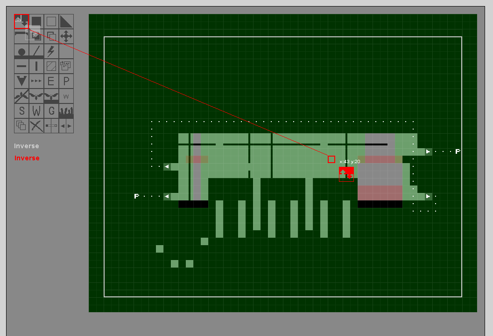
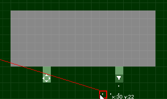
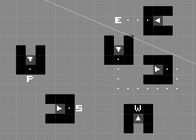
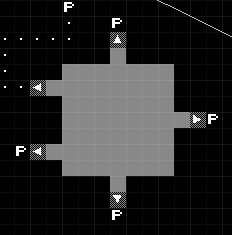
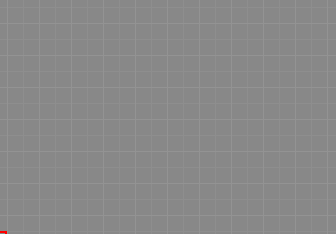

The Geometry Editor is the first stop for the creation of new rooms. In the Geometry Editor, you define the gameplay and collision information of your room, as well as the placement of vertical and horizontal bars, shortcuts, entrances and exits (to connect your room to other rooms), and a number of other gameplay relevant elements. Once you have defined your geometry (and ideally play tested your room in-engine) you can move on to the Tile Editor to define the look and props that make up your geometry.
The arrow keys on your keyboard allow you to change which tool you have selected in the top left panel.
You move the red cursor with the mouse. Left click places elements (and in some cases is also used to remove them).
Numpad 4,8,6 and 2 move the section of your room currently visible in the editor (a selection that is carried forward into the Tile Editor).
As always, 1 will return you to the dashboard to save your progress or move to a different editor.
As an experimental feature, the developers implemented a second cursor and control scheme to allow two users to edit a room simultaneously (with the second user entirely on the keyboard). While this ended up being a little used feature (as far as we are aware), it is still implemented in the current editor (represented by the grey cursor).
Starting from the top left, and going through each row.

Short cuts and their connections to the various kinds of entrances in Rain World have specific needs! Improperly making the short cut can lead to crashes, or odd behavior in game. This gif presents several examples of properly linked short cuts.
A short cut dot is not required between the short cut's entrance, and the den or door it is connecting to. However, the shortcut must show as an arrow toward the den or door for the link to it to be proper. The short cut entrance also requires walls surrounding it on all sides, with the exception of the side you will enter it from.
Connecting two short cut entrances to each other with dots will connect them as a tunnel between the two. The various other den and entrance types will decide how enemies interact with the entrance. Dens are used for most normal creatures. Scavenger require their unique entrance type to enter the room properly without using normal doors. ( They will not be able to leave the OFFSCREEN room of the region if there are no scavenger doors at all in the region! ) Garbage worms require a unique door due to their AI's behavior, and cannot use normal dens, nore can enemies enter their dens. Finally the Whack-A-Mole holes are used by creatures to warp from various short cuts around the room.
The images on the right also display the bare minimum needed for short cut entrances to function, and example doors in all directions.

Rain World levels consist of 3 layers, each representing a different depth. This layer info is represented
visually through the color of tiles, and you can switch between editing on different layers with the work layer tool in the bottom left of the tool panel. Layer 1 draws in full black, layer 2 draws in green, and layer 3 draws in red. These colors will blend if multiple layers are drawn on top of each other.
Layer 1 is the foreground, and any filled tiles on this layer will have collision. This is the base layer you define for the sake of gameplay, as any air here is space you can traverse.
Layer 2 is the midground, which you can imagine as the back wall of your room.
Layer 3 is the extreme background, behind the back wall of the room (for placing distant objects or giving the room a section of open sky).
Note: The tile editor defines the visual tiles and props that make up this geometry, so in order to place solid objects in the tile editor (on any layer), those tiles need to be filled here in the geometry editor. Even though the mid-ground and background do not provide any collision geometry, in order to place solid props on those layers the tiles need to be filled here in the geometry editor. Similarly, some props can only be placed on air on the layers (like fences).
Many of the gameplay features require that they be placed within the margins of your room (represented by the white border). An entrance placed outside of your margins will render your room un-enterable, for example.
Because the tool panel loops around from top to bottom and left to right, when editing the base geometry (walls and air) it's faster to use the arrow keys to go up to reach the work layer tool to swap layers than to cycle through the whole list to reach them. Also, the rectangular wall and air tools will let you edit large chunks of your level much faster than going tile by tile.
SHORTCUTS: In order to place functional shortcuts, the shortcut entrance needs to be inset by one tile, and the tile adjacent to it needs to be surrounded by walls on 2 sides (the image above should help clarify what I mean). If the shortcut entrance looks like a hollow circle, it isn't correctly configured (once it is, it will look like the entrances in the above screenshot).
ENTRANCES: Setting up entrances to your room is similar to shortcuts, the only difference being that rather than connect to another shortcut entrance, your shortcut dots need to connect to a tile marked as an entrance. This entrance (denoted by a P) MUST be within the level and not on the margins. In order to ensure that your level will function, I recommend at least a one tile gap (a "rule" violated by the right entrance in the above screenshot).
LAYER OVERLAP: Because the layers move with a parallax effect, it's often necessary to extend elements on your background layer behind your other layers, otherwise the camera angle will sometimes let you see a gap to the left or right of a background wall and the layer in front of it (for example).